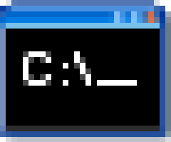

<!DOCTYPE html>
<html lang="it">

<head>
    <meta charset="UTF-8">
    <meta name="viewport" content="width=device-width, initial-scale=1.0">
    <title>Caccamo</title>
    <link rel="stylesheet" href="./css/style.css">
    <script src="./start.js"></script>
</head>

<body>
    <div class="cestino" title="beccati sto desktop"></div>
    <div class="desktop-icons">
        <div class="desktop-icon explorer" title="Internet Explorer"></div>
        <div class="desktop-icon prompt" title="prompt dei comandi"></div>
    </div>
    <div class="footer">
        
        
        
        
        <div class="DateTimeContainer">
            <div id="currentDate"></div>
            <div id="currentTime"></div>
        </div>
    </div>

    <script>

        // Inizializza la variabile per tenere traccia del terminale creato
        let nuovoTerminale = null;

        // Seleziona tutti gli elementi del DOM che hanno una classe che contiene "prompt"
        const prompts = document.querySelectorAll('[class*="prompt"]');

        // Aggiunge un listener di evento 'click' a ciascun elemento selezionato
        prompts.forEach(element => {
            element.addEventListener("click", (event) => {
                // Verifica se l'elemento cliccato ha la classe "prompt"
                if (event.target.classList.contains("prompt")) {
                    // Se non è stato creato un terminale, crea e aggiunge un nuovo terminale
                    if (!nuovoTerminale) {
                        nuovoTerminale = createTerminal();
                        document.body.appendChild(nuovoTerminale);
                        const iconaRidotta = document.querySelector("#riapri-terminale");
                        iconaRidotta.style.display = "block"; // Mostra l'icona per riaprire il terminale
                    } else {
                        nuovoTerminale.style.display = "block"; // Mostra il terminale esistente
                    }
                }
            });
        });

        // Funzione per creare e configurare un nuovo terminale
        function createTerminal() {
            // Crea un contenitore per l'app
            const appContainer = document.createElement("div");
            appContainer.classList.add("app-container");

            // Imposta il contenuto HTML del terminale
            appContainer.innerHTML = `<div class="terminal">
                                </div>
                                <div class="input-container">
                                <input type="text" id="us" placeholder="Digita qui">
                                </div>
                                <div class="header">
                                    <div class="head">
                                        Prompt dei comandi
                                    </div>    
                                    <input type="button" id="riduci">
                                    <input type="button" id="ingrandisci">
                                    <input type="button" id="chiudi">
                                </div>`;

            // Seleziona l'elemento della console all'interno del terminale
            const consoleElement = appContainer.querySelector(".terminal");

            // Aggiunge un listener di evento 'click' al pulsante di chiusura
            const closeButton = appContainer.querySelector("#chiudi");
            closeButton.addEventListener("click", (event) => {
                event.preventDefault(); // Prevenire l'azione predefinita
                appContainer.remove(); // Rimuove il contenitore del terminale dal DOM
                const icona = document.querySelector("#riapri-terminale");
                icona.style.display = "none"; // Nasconde l'icona per riaprire il terminale
                nuovoTerminale = null; // Resetta la variabile del terminale
            });

            // Aggiunge un listener di evento 'click' al pulsante di ingrandimento
            const ingrandisciButton = appContainer.querySelector("#ingrandisci");
            ingrandisciButton.addEventListener("click", () => {
                // Cambia la posizione e dimensione del terminale tra modalità fissa e assoluta
                if (appContainer.style.position === "fixed") {
                    appContainer.style.position = "absolute";
                    appContainer.style.top = "50px";
                    appContainer.style.left = "50px";
                    appContainer.style.width = "600px";
                    appContainer.style.height = "350px";
                    document.querySelector("#ingrandisci").classList.remove("fullscreen-button");
                } else {
                    appContainer.style.position = "fixed";
                    appContainer.style.top = "0";
                    appContainer.style.left = "0";
                    appContainer.style.width = "100%";
                    appContainer.style.height = "97%";
                    appContainer.style.overflow = "hidden";
                    document.querySelector("#ingrandisci").classList.add("fullscreen-button");
                }
            });

            // Aggiunge un listener di evento 'click' al pulsante di riduzione
            const reduceButton = appContainer.querySelector("#riduci");
            reduceButton.addEventListener("click", (event) => {
                event.preventDefault(); // Prevenire l'azione predefinita
                appContainer.style.display = "none"; // Nasconde il terminale
                nuovoTerminale = appContainer; // Salva il riferimento al terminale nascosto
            });

            // Variabili per gestire il trascinamento del terminale
            let startX, startY, initialX, initialY;
            appContainer.addEventListener('mousedown', (e) => {
                startX = e.clientX;
                startY = e.clientY;
                initialX = appContainer.offsetLeft;
                initialY = appContainer.offsetTop;
                document.addEventListener('mousemove', drag);
                document.addEventListener('mouseup', () => {
                    document.removeEventListener('mousemove', drag);
                });

                // Funzione per aggiornare la posizione del terminale durante il trascinamento
                function drag(e) {
                    const newX = initialX + (e.clientX - startX);
                    const newY = initialY + (e.clientY - startY);
                    appContainer.style.top = `${newY}px`;
                    appContainer.style.left = `${newX}px`;
                }
            });

            // Aggiunge un listener di evento 'keydown' all'input del terminale
            const inputElement = appContainer.querySelector("#us");
            inputElement.addEventListener("keydown", (event) => {
                if (event.key === "Enter") {
                    log(inputElement.value); // Gestisce il comando quando si preme "Enter"
                    inputElement.value = ""; // Pulisce l'input
                }
            });

            // Imposta un comando di aiuto iniziale e lo mostra
            inputElement.value = "help";
            log(inputElement.value);
            inputElement.value = "";

            // Funzione per gestire e mostrare i comandi nel terminale
            function log(message) {
                // Gestisce il comando "help" e mostra le istruzioni
                if (message.toLowerCase() === "help") {
                    message = "Benvenuto nel mio terminale! Digita: <br> 'HELP' per visualizzare le funzioni disponibili <br> 'DATA E ORA' per visualizzare la data e l'ora correnti <br> 'SERVER' per accedere ai dati del server <br> 'METEO' per conoscere il meteo della tua città <br> 'TIMER' per avviare il cronometro <br> 'RESET' per ripulire tutto il terminale";
                    // Gestisce il comando "data e ora" e mostra la data e l'ora correnti
                } else if (message.toLowerCase() == "data e ora") {
                    const nuova = new Date();
                    const data = new Intl.DateTimeFormat('it-IT', {
                        year: 'numeric',
                        month: '2-digit',
                        day: '2-digit',
                        hour: '2-digit',
                        minute: '2-digit',
                    });
                    message = data.format(nuova);
                }
                // Gestisce il comando "reset" e pulisce il terminale
                else if (message.toLowerCase() == "reset") {
                    const righe = consoleElement.querySelectorAll('.row');
                    righe.forEach(riga => riga.remove());
                    return;
                }
                // Gestisce il comando "server" e recupera dati dal server
                else if (message.toLowerCase() == "server") {
                    fetch('https://jsonplaceholder.typicode.com/todos/')
                        .then(response => response.json())
                        .then(data => {
                            data.forEach(item => {
                                const elemento = document.createElement("div");
                                elemento.classList = ["row"];
                                const deleteButton = document.createElement("span");
                                deleteButton.innerHTML = "[ELIMINA] ";
                                deleteButton.classList = ["delete"];
                                deleteButton.addEventListener("click", () => {
                                    elemento.remove();
                                });
                                elemento.appendChild(deleteButton);
                                const serverInfo = document.createElement("span");
                                serverInfo.innerHTML = JSON.stringify(item);
                                elemento.appendChild(serverInfo);
                                consoleElement.appendChild(elemento);
                                consoleElement.scrollTop = consoleElement.scrollHeight;
                            });
                        });
                    return;
                }
                // Gestisce il comando "meteo" e recupera le informazioni meteo per una città
                else if (message.toLowerCase().startsWith("meteo")) {
                    // Verifica se il comando inizia con "meteo", ignorando il case

                    const città = message.substring(6).trim();
                    // Estrae il nome della città dal messaggio, rimuovendo "meteo" e gli spazi bianchi

                    if (città != "") {
                        // Controlla se è stato fornito un nome di città non vuoto

                        const apiKeyWeather = "642877afeb744264af233dec2ead0c08";
                        // La chiave API per accedere ai dati meteo dal servizio OpenWeatherMap

                        fetch(`https://api.openweathermap.org/data/2.5/weather?q=${città},IT&appid=${apiKeyWeather}&units=metric`)
                            // Effettua una richiesta HTTP alla API meteo con il nome della città, la chiave API e l'unità di misura

                            .then(response => response.json())
                            // Converte la risposta della API in formato JSON

                            .then(data => {
                                // Gestisce i dati JSON ricevuti dalla API

                                const messaggio = `${data.name} (${data.sys.country}), ${data.main.temp}°C, ${data.weather[0].description}.`;
                                // Crea un messaggio con il nome della città, il paese, la temperatura e una descrizione del tempo

                                const elemento = document.createElement("div");
                                elemento.classList = ["row"];
                                // Crea un nuovo elemento div per contenere il messaggio meteo

                                const deleteButton = document.createElement("span");
                                deleteButton.innerHTML = "[ELIMINA] ";
                                deleteButton.classList = ["delete"];
                                deleteButton.addEventListener("click", () => {
                                    elemento.remove();
                                });
                                // Crea un pulsante di eliminazione per rimuovere il messaggio dal terminale

                                const messaggioElement = document.createElement("span");
                                messaggioElement.innerHTML = messaggio;
                                // Crea un elemento span per visualizzare il messaggio meteo

                                elemento.appendChild(deleteButton);
                                elemento.appendChild(messaggioElement);
                                consoleElement.appendChild(elemento);
                                // Aggiunge il pulsante di eliminazione e il messaggio al div principale e poi aggiunge il div al terminale

                                consoleElement.scrollTop = consoleElement.scrollHeight;
                                // Scorre il terminale verso il basso per mostrare il nuovo messaggio
                            })

                            .catch(error => {
                                // Gestisce eventuali errori durante la richiesta

                                const messaggio = "Ci fu erore: " + error.message;
                                // Crea un messaggio di errore con il testo dell'errore

                                const elemento = document.createElement("div");
                                elemento.classList = ["row"];
                                // Crea un nuovo elemento div per contenere il messaggio di errore

                                const deleteButton = document.createElement("span");
                                deleteButton.innerHTML = "[ELIMINA] ";
                                deleteButton.classList = ["delete"];
                                deleteButton.addEventListener("click", () => {
                                    elemento.remove();
                                });
                                // Crea un pulsante di eliminazione per rimuovere il messaggio di errore dal terminale

                                const messaggioElement = document.createElement("span");
                                messaggioElement.innerHTML = messaggio;
                                // Crea un elemento span per visualizzare il messaggio di errore

                                elemento.appendChild(deleteButton);
                                elemento.appendChild(messaggioElement);
                                consoleElement.appendChild(elemento);
                                // Aggiunge il pulsante di eliminazione e il messaggio di errore al div principale e poi aggiunge il div al terminale

                                consoleElement.scrollTop = consoleElement.scrollHeight;
                                // Scorre il terminale verso il basso per mostrare il messaggio di errore
                            });

                        return;
                        // Termina l'esecuzione del blocco di codice per evitare ulteriori istruzioni
                    } else {
                        // Se il nome della città è vuoto

                        const messaggio = `Inserisci una città italiana dopo 'meteo'!`;
                        // Crea un messaggio che informa l'utente di fornire un nome di città

                        const elemento = document.createElement("div");
                        elemento.classList = ["row"];
                        // Crea un nuovo elemento div per contenere il messaggio di errore

                        const deleteButton = document.createElement("span");
                        deleteButton.innerHTML = "[ELIMINA] ";
                        deleteButton.classList = ["delete"];
                        deleteButton.addEventListener("click", () => {
                            elemento.remove();
                        });
                        // Crea un pulsante di eliminazione per rimuovere il messaggio dal terminale

                        const messaggioElement = document.createElement("span");
                        messaggioElement.innerHTML = messaggio;
                        // Crea un elemento span per visualizzare il messaggio di errore

                        elemento.appendChild(deleteButton);
                        elemento.appendChild(messaggioElement);
                        consoleElement.appendChild(elemento);
                        // Aggiunge il pulsante di eliminazione e il messaggio al div principale e poi aggiunge il div al terminale

                        consoleElement.scrollTop = consoleElement.scrollHeight;
                    }

                    return;
                    // Termina l'esecuzione del blocco di codice per evitare ulteriori istruzioni
                }

                // Gestisce il comando "timer" e avvia un cronometro
                else if (message.toLowerCase() === "timer") {
                    const timerApp = {
                        minuti: 0,
                        secondi: 0,
                        timerRow: null,
                        start: function () {
                            this.timer = setInterval(() => {
                                this.incrementTimer();
                            }, 1000);
                        },
                        stop: function () {
                            clearInterval(this.timer);
                        },
                        incrementTimer: function () {
                            this.secondi++;
                            if (this.secondi > 59) {
                                this.minuti++;
                                this.secondi = 0;
                            }
                            this.updateView();
                        },
                        updateView: function () {
                            const minutiString = this.minuti.toString().padStart(2, '0');
                            const secondiString = this.secondi.toString().padStart(2, '0');
                            const timerText = this.timerRow.querySelector("span:nth-child(2)");
                            timerText.innerHTML = `Timer: ${minutiString}:${secondiString}`;
                        },
                    };
                    timerApp.timerRow = document.createElement("div");
                    timerApp.timerRow.classList = ["row"];
                    const deleteButton = document.createElement("span");
                    deleteButton.innerHTML = "[ELIMINA] ";
                    deleteButton.classList = ["delete"];
                    deleteButton.addEventListener("click", () => {
                        timerApp.timerRow.remove();
                    });
                    const stopButton = document.createElement("span");
                    stopButton.innerHTML = " [STOP]";
                    stopButton.classList = ["delete"];
                    let isStopped = false;
                    stopButton.addEventListener("click", () => {
                        if (isStopped) {
                            timerApp.start();
                            stopButton.innerHTML = " [STOP]";
                            isStopped = false;
                        } else {
                            timerApp.stop();
                            stopButton.innerHTML = " [RIAVVIA]";
                            isStopped = true;
                        }
                    });
                    const timerText = document.createElement("span");
                    timerText.innerHTML = `Timer: 00:00`;
                    timerApp.timerRow.appendChild(deleteButton);
                    timerApp.timerRow.appendChild(timerText);
                    timerApp.timerRow.appendChild(stopButton);
                    consoleElement.appendChild(timerApp.timerRow);
                    consoleElement.scrollTop = consoleElement.scrollHeight;
                    timerApp.start();
                    return; // Evita che il timer venga sovrascritto da altri comandi
                }
                // Gestisce comandi non riconosciuti
                else if (message.toLowerCase() !== "") {
                    message = "Comando non trovato, ci fu erore!";
                }

                // Crea e mostra un elemento con il messaggio da visualizzare nel terminale
                const elemento = document.createElement("div");
                elemento.classList = ["row"];
                const deleteButton = document.createElement("span");
                const messaggioElement = document.createElement("span");
                deleteButton.innerHTML = "[ELIMINA] ";
                deleteButton.classList = ["delete"];
                messaggioElement.innerHTML = message;

                deleteButton.addEventListener("click", () => {
                    elemento.remove();
                });

                elemento.appendChild(deleteButton);
                elemento.appendChild(messaggioElement);
                consoleElement.appendChild(elemento);
                consoleElement.scrollTop = consoleElement.scrollHeight;
            }

            return appContainer; // Restituisce il contenitore del terminale
        }

        // Funzione per aggiornare la data e l'ora nel documento
        function updateDateTime() {
            // Ottieni gli elementi per la data e l'ora
            const dateElement = document.getElementById('currentDate');
            const timeElement = document.getElementById('currentTime');

            // Ottieni la data corrente
            const currentDate = new Date();

            // Formatta la data e l'ora come desideri
            const optionsDate = { year: 'numeric', month: '2-digit', day: '2-digit' };
            const optionsTime = { hour: 'numeric', minute: 'numeric' };

            const formattedDate = currentDate.toLocaleDateString('it-IT', optionsDate);
            const formattedTime = currentDate.toLocaleTimeString('it-IT', optionsTime);

            // Aggiorna il contenuto dei div con la data e l'ora formattate
            dateElement.textContent = formattedDate;
            timeElement.textContent = formattedTime;
        }

        // Chiamata iniziale per aggiornare immediatamente la data e l'ora
        updateDateTime();

        // Imposta un intervallo per aggiornare la data e l'ora ogni secondo (1000 millisecondi)
        setInterval(updateDateTime, 1000);

        // Variabile globale per tenere traccia della finestra Explorer
        let explorerWindow = null;

        // Clic sull'icona Explorer nel desktop
        const desktopExplorerIcon = document.querySelector(".desktop-icon.explorer");

        desktopExplorerIcon.addEventListener("click", () => {
            if (!explorerWindow) {
                explorerWindow = document.createElement('div');
                explorerWindow.id = 'explorer-window';
                explorerWindow.classList.add('app-container');
                explorerWindow.style.zIndex = 2;
                explorerWindow.innerHTML = `
            <div class="header">
                <div class="head">Internet Explorer</div>
                <input type="button" class="btn-riduci">
                <input type="button" class="btn-ingrandisci">
                <input type="button" class="btn-chiudi">
            </div>
            <div class="content">
                <iframe src="../index.html" style="width:100%; height:100%; border:none;"></iframe>
            </div>
        `;
                document.body.appendChild(explorerWindow);

                const taskIcon = document.querySelector('#riapri-explorer');
                taskIcon.style.display = 'block';

                // Chiudi
                explorerWindow.querySelector('.btn-chiudi').addEventListener('click', () => {
                    explorerWindow.remove();
                    taskIcon.style.display = 'none';
                    explorerWindow = null;
                });

                // Riduci
                explorerWindow.querySelector('.btn-riduci').addEventListener('click', () => {
                    explorerWindow.style.display = 'none';
                });

                // Riapri dalla taskbar
                taskIcon.addEventListener('click', () => {
                    if (explorerWindow) {
                        explorerWindow.style.display = 'block';

                        // Aggiorna le dimensioni della content area e iframe
                        const content = explorerWindow.querySelector('.content');
                        const iframe = content.querySelector('iframe');
                        content.style.width = '100%';
                        content.style.height = '100%';
                        iframe.style.width = '100%';
                        iframe.style.height = '100%';
                    }
                });


                // Ingrandisci / rimpicciolisci
                const btnMax = explorerWindow.querySelector('.btn-ingrandisci');
                btnMax.addEventListener('click', () => {
                    if (explorerWindow.classList.contains('fullscreen')) {
                        explorerWindow.classList.remove('fullscreen');
                        explorerWindow.style.position = 'absolute';
                        explorerWindow.style.width = '800px';
                        explorerWindow.style.height = '500px';
                        explorerWindow.style.top = '60px';
                        explorerWindow.style.left = '120px';
                        btnMax.style.backgroundImage = 'url(./img/finestra.jpg)';
                    } else {
                        explorerWindow.classList.add('fullscreen');
                        explorerWindow.style.position = 'fixed';
                        explorerWindow.style.top = '0';
                        explorerWindow.style.left = '0';
                        explorerWindow.style.width = '100%';
                        explorerWindow.style.height = 'calc(100% - 30px)';
                        btnMax.style.backgroundImage = 'url(./img/minimize.png)';
                    }
                });

                // Drag della finestra
                const header = explorerWindow.querySelector('.header');
                let startX, startY, initX, initY;
                header.addEventListener('mousedown', (e) => {
                    startX = e.clientX;
                    startY = e.clientY;
                    initX = explorerWindow.offsetLeft;
                    initY = explorerWindow.offsetTop;
                    document.addEventListener('mousemove', dragExplorer);
                    document.addEventListener('mouseup', stopDragExplorer);
                });

                function dragExplorer(e) {
                    explorerWindow.style.left = initX + (e.clientX - startX) + 'px';
                    explorerWindow.style.top = initY + (e.clientY - startY) + 'px';
                }

                function stopDragExplorer() {
                    document.removeEventListener('mousemove', dragExplorer);
                    document.removeEventListener('mouseup', stopDragExplorer);
                }
            }
        });


    </script>
</body>

</html>